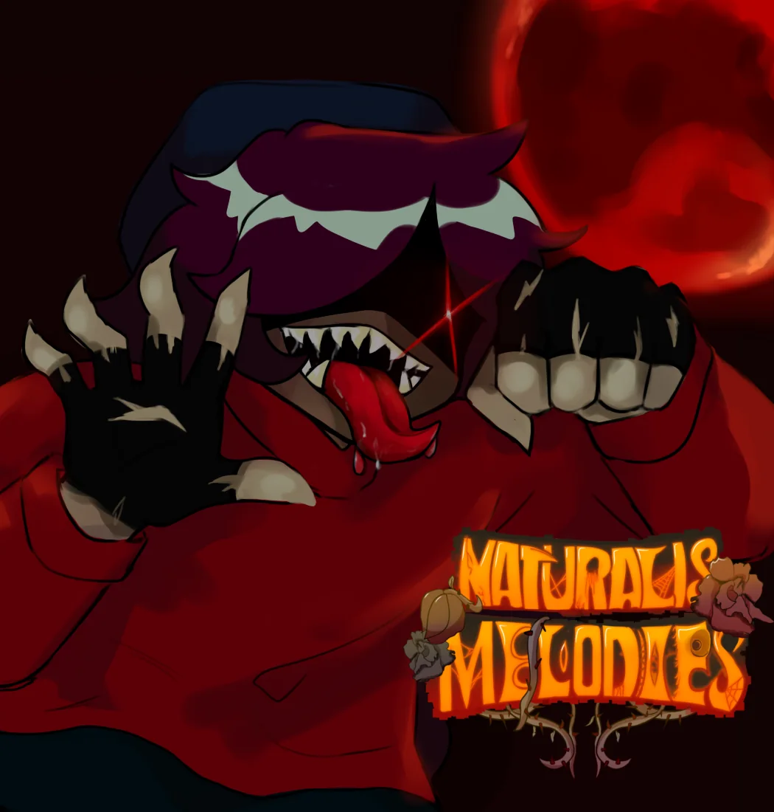
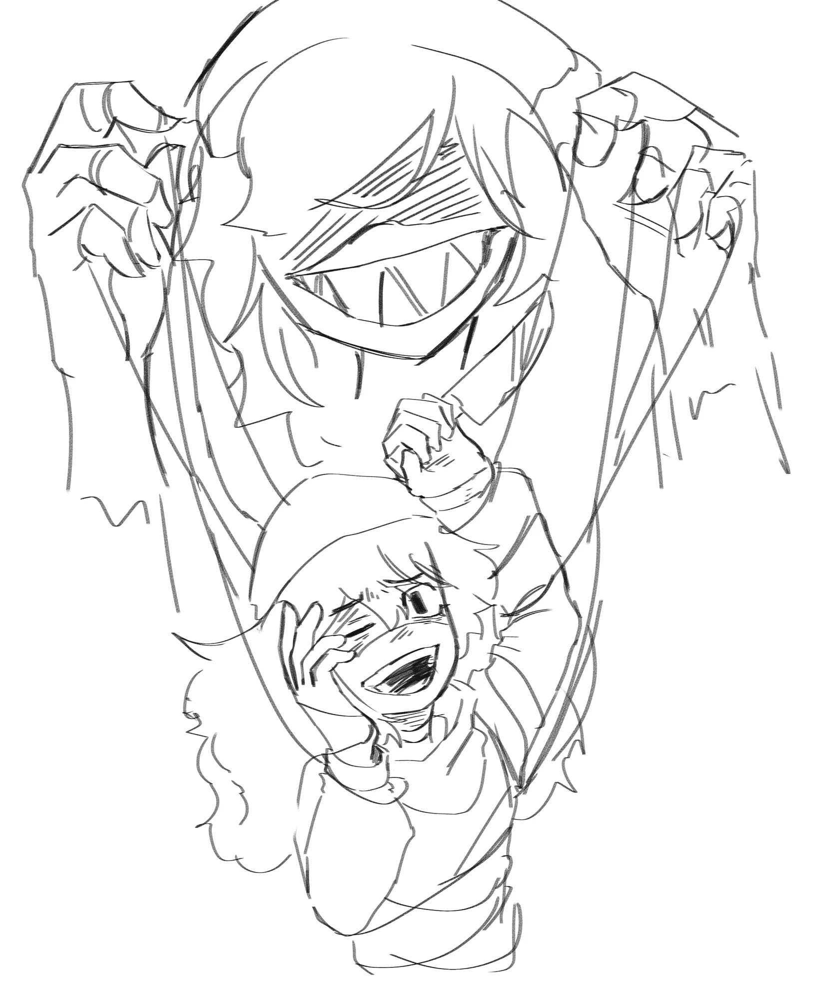
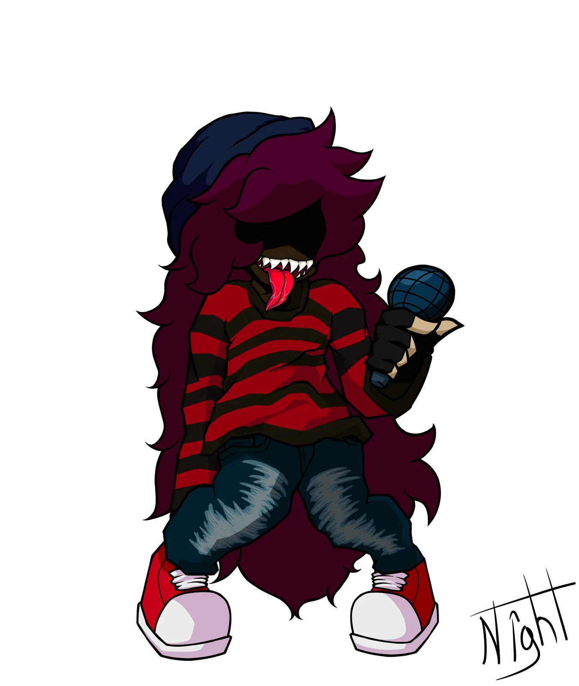
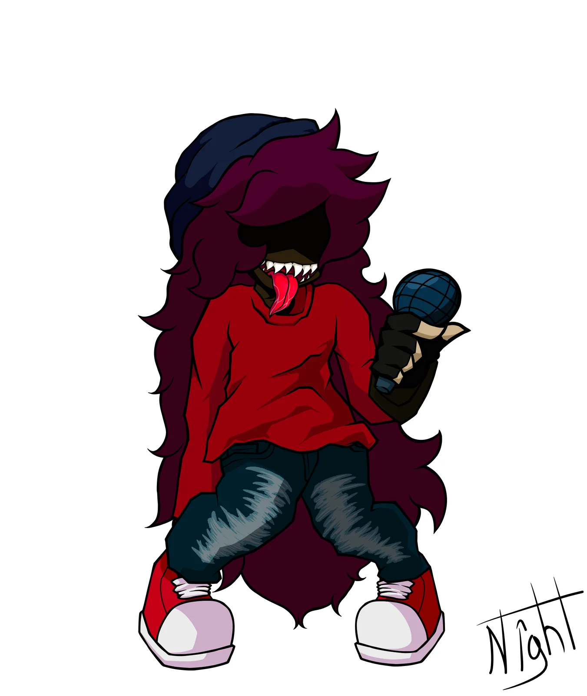
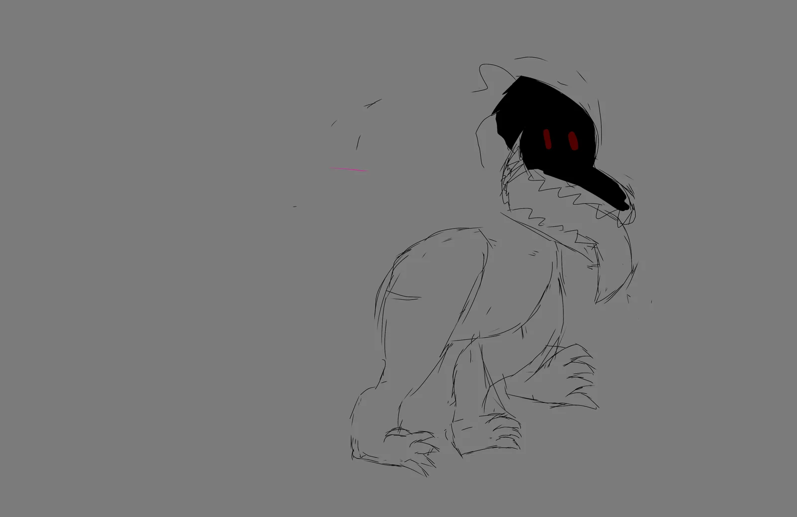
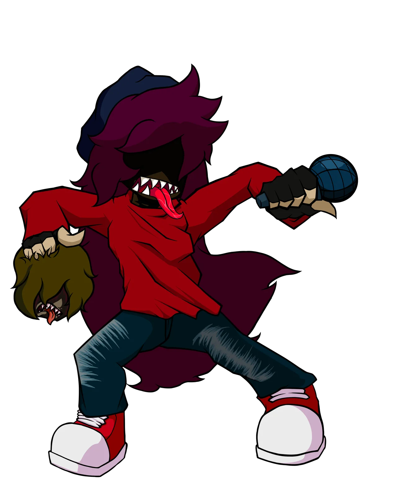
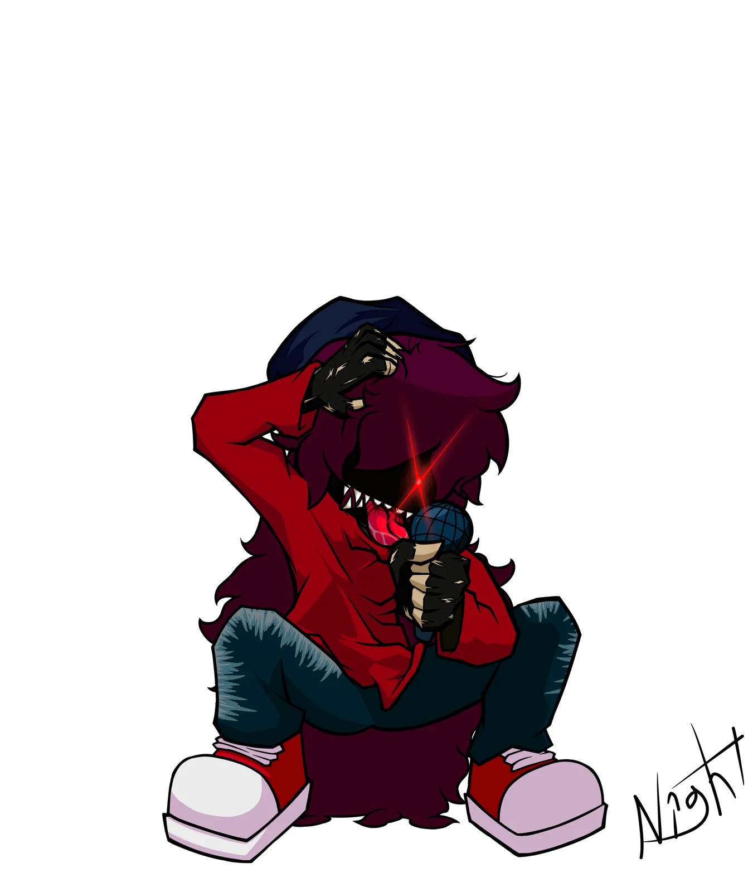
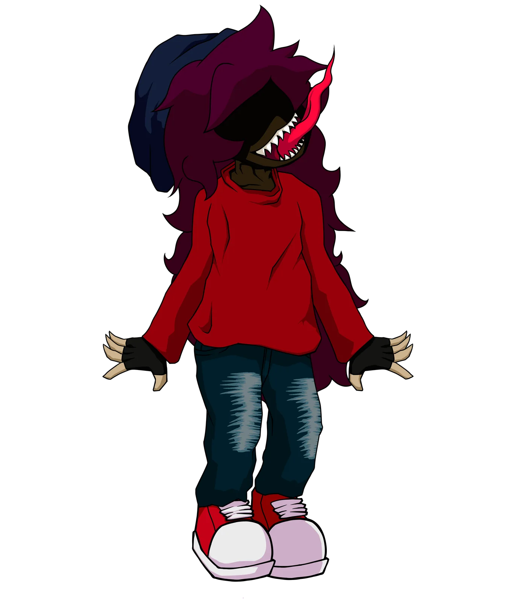
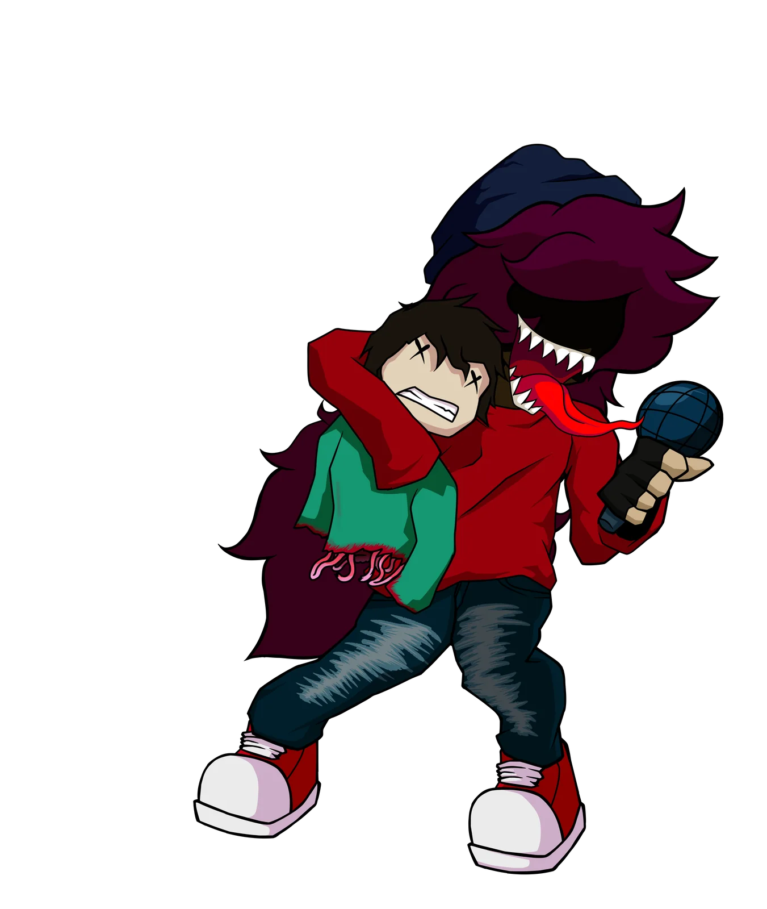

La rosa como detonante
La propuesta planteaba que Kamer consumía la rosa y comenzaba una transformación progresiva. La idea oscilaba entre una infección, una alteración de su cuerpo y una personalidad caníbal.
Una segunda semana descartada donde Kamer comenzaba a transformarse después de consumir la rosa. El concepto mezclaba infección, pérdida de identidad y horror caníbal, pero nunca llegó a establecer una dirección definitiva.

La propuesta planteaba que Kamer consumía la rosa y comenzaba una transformación progresiva. La idea oscilaba entre una infección, una alteración de su cuerpo y una personalidad caníbal.
La Week 2 fue eliminada porque no existía una ruta narrativa clara para continuarla. El arte disponible y el presupuesto de producción tampoco permitían desarrollar la idea con la escala necesaria.
Las canciones, diseños y sprites se conservan como parte del historial de Naturalis Melodies. No representan la versión actual de Kamer ni la continuidad oficial de NRX.
Música por Leaflame

Primera señal de la Week 2. La presentación introduce la transformación desde una portada dibujada en blanco y negro.


El archivo conserva la versión completa y su instrumental. El selector cambia de versión sin perder el segundo actual.

Última canción conservada del paquete. Su archivo principal estaba guardado como WAV y fue preparado para la web sin borrar el original.
Las cuatro direcciones aparecen una sola vez dentro de la canción a la que pertenecen.




Under Your Deaht quedó como una posibilidad abandonada de Naturalis Melodies. El archivo se conserva para documentar cómo una idea de horror pudo existir antes de que Kamer y NRX encontraran su identidad definitiva.
Regresar al archivo principal de KamerActiva la música del menú para entrar a la experiencia completa de la Week 2.